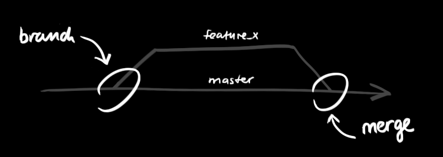

Git - 简明指南
助你入门 git 的简明指南，木有高深内容 ;)
by Roger Dudler < 罗杰·杜德勒 >
YinLu 手机随翻版
创建新仓库
创建新文件夹，打开，然后执行
git init
以创建新的 git 仓库。
检出仓库
执行如下命令以创建一个本地仓库的克隆版本：
git clone /path/to/repository
如果是远端服务器上的仓库，你的命令会是这个样子：
git clone username@host:/path/to/repository
工作流
你的本地仓库由 git 维护的三棵“树”组成。
第一个是你的( 工作目录 )，它持有实际文件；
第二个是 暂存区（ INDEX ），它像个缓存区域，临时保存你的改动；
最后是 HEAD，它指向你最后一次提交的结果。
添加和提交
你可以提出更改（把它们添加到暂存区），使用如下命令：
git add < filename >
git add *
这是 git 基本工作流程的第一步；使用如下命令以实际提交改动：
git commit -m "代码提交信息"
现在，你的改动已经提交到了 HEAD，但是还没到你的远端仓库。
推送改动
你的改动现在已经在本地仓库的 HEAD 中了。执行如下命令以将这些改动提交到远端仓库：
git push origin master
可以把 master 换成你想要推送的任何分支。
如果你还没有克隆现有仓库，并欲将你的仓库连接到某个远程服务器，你可以使用如下命令添加：
git remote add origin < server >
如此你就能够将你的改动推送到所添加的服务器上去了。
分支
分支是用来将特性开发绝缘开来的。在你创建仓库的时候，master 是“默认的”分支。在其他分支上进行开发，完成后再将它们合并到主分支上。

创建一个叫做“feature_x”的分支，并切换过去：
git checkout -b feature_x
切换回主分支：
git checkout master
再把新建的分支删掉：
git branch -d feature_x
除非你将分支推送到远端仓库，不然该分支就是 不为他人所见的：
git push origin < branch >
更新与合并
要更新你的本地仓库至最新改动，执行：
git pull
以在你的工作目录中 获取（fetch） 并 合并（merge） 远端的改动。 要合并其他分支到你的当前分支（例如 master），执行：
git merge < branch >
在这两种情况下，git 都会尝试去自动合并改动。遗憾的是，这可能并非每次都成功，并可能出现冲突（conflicts）。 这时候就需要你修改这些文件来手动合并这些冲突（conflicts）。改完之后，你需要执行如下命令以将它们标记为合并成功：
git add <filename>
在合并改动之前，你可以使用如下命令预览差异：
git diff <source_branch> <target_branch>
标签
为软件发布创建标签是推荐的。这个概念早已存在，在 SVN 中也有。你可以执行如下命令创建一个叫做 1.0.0 的标签：
git tag 1.0.0 1b2e1d63ff
1b2e1d63ff 是你想要标记的提交 ID 的前 10 位字符。可以使用下列命令获取提交 ID：
git log
你也可以使用少一点的提交 ID 前几位，只要它的指向具有唯一性。
log
如果你想了解本地仓库的历史记录，最简单的命令就是使用:
git log
你可以添加一些参数来修改他的输出，从而得到自己想要的结果。 只看某一个人的提交记录:
git log --author=bob
一个压缩后的每一条提交记录只占一行的输出:
git log --pretty=oneline
或者你想通过 ASCII 艺术的树形结构来展示所有的分支, 每个分支都标示了他的名字和标签:
git log --graph --oneline --decorate --all
看看哪些文件改变了:
git log --name-status
这些只是你可以使用的参数中很小的一部分。更多的信息，参考：
git log --help
替换本地改动
假如你操作失误（当然，这最好永远不要发生），你可以使用如下命令替换掉本地改动：
git checkout -- <filename >
此命令会使用 HEAD 中的最新内容替换掉你的工作目录中的文件。已添加到暂存区的改动以及新文件都不会受到影响。假如你想丢弃你在本地的所有改动与提交，可以到服务器上获取最新的版本历史，并将你本地主分支指向它：
git fetch origin
git reset --hard origin/master
实用小贴士
内建的图形化 git：
gitk
彩色的 git 输出：
git config color.ui true
显示历史记录时，每个提交的信息只显示一行：
git config format.pretty oneline
交互式添加文件到暂存区：